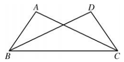
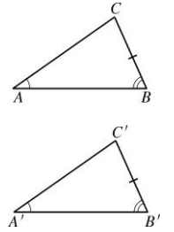
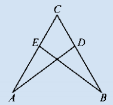

我们已经研究了“两边一角”的情况，知道“边角边”可以判定全等，而“边边角”不能。现在我们来研究“两角一边”分别相等的情况。
两角一边有两种情形：两角及其夹边（角边角）和两角及其中一角的对边（角角边），如图12.2.9所示。
如果两个三角形有两个角及其夹边分别相等，那么这两个三角形会全等吗？
做一做 如图，已知$\angle \alpha$、$\angle \beta$和线段$c$，试作$\triangle ABC$，使$\angle A = \angle \alpha$，$AB = c$，$\angle B = \angle \beta$。
下面借助交互工具，动态改变两个三角形的∠A、∠B和夹边c，直观验证当∠A、c、∠B分别相等时，两个三角形是否全等。
通过交互实验可以直观发现：当两个三角形的 ∠A、夹边 c、∠B 分别相等时，它们一定全等。这验证了“角边角”基本事实。
如图，在$\triangle ABC$和$\triangle A'B'C'$中，已知$\angle A = \angle A'$，$AB = A'B'$，$\angle B = \angle B'$。
由于$AB = A'B'$，我们可以移动$\triangle ABC$，使点$A$与点$A'$、点$B$与点$B'$重合。因为$\angle A = \angle A'$，所以可以使射线$AC$与射线$A'C'$重合；又因为$\angle B = \angle B'$，所以可以使射线$BC$与射线$B'C'$重合。于是点$C$与点$C'$重合，两三角形全等。
两角及其夹边分别相等的两个三角形全等。（简写成“角边角”或“ASA”）
如图，$\angle ABC = \angle DCB$，$\angle ACB = \angle DBC$。求证：$\triangle ABC \cong \triangle DCB$，$AB = DC$。

证明：
在$\triangle ABC$和$\triangle DCB$中，
$\angle ABC = \angle DCB$ (已知)，
$BC = CB$ (公共边)，
$\angle ACB = \angle DBC$ (已知)，
$\therefore \triangle ABC \cong \triangle DCB$ (ASA)。
$\therefore AB = DC$ (全等三角形的对应边相等)。
如图12.2.14，如果两个三角形有两个角分别相等，且其中一组相等的角的对边相等，那么这两个三角形是否一定全等？

分析 因为三角形的内角和等于$180^\circ$，因此有两个角分别相等，那么第三个角必定相等，于是由“角边角”，便可证得这两个三角形全等。
两角分别相等且其中一组等角的对边相等的两个三角形全等。（简写成“角角边”或“AAS”）
已知：如图12.2.14，$\angle A = \angle A'$，$\angle B = \angle B'$，$BC = B'C'$。
求证：$\triangle ABC \cong \triangle A'B'C'$。
证明：
$\because \angle A + \angle B + \angle C = 180^\circ$ (三角形内角和)，
$\therefore \angle C = 180^\circ - \angle A - \angle B$ (等式的性质)。
同理，$\angle C' = 180^\circ - \angle A' - \angle B'$。
$\because \angle A = \angle A'$，$\angle B = \angle B'$ (已知)，
$\therefore \angle C = \angle C'$ (等量代换)。
在$\triangle ABC$和$\triangle A'B'C'$中，
$\angle B = \angle B'$ (已知)，$BC = B'C'$ (已知)，$\angle C = \angle C'$ (已证)，
$\therefore \triangle ABC \cong \triangle A'B'C'$ (ASA)。
所以AAS成立。
1. 如图，$\angle A = \angle B$，$CA = CB$，$\triangle CAD$ 和 $\triangle CBE$ 全等吗？$CD$ 和 $CE$ 相等吗？试说明理由。

全等。理由如下：
在$\triangle CAD$和$\triangle CBE$中，
$\angle A = \angle B$ (已知)，
$CA = CB$ (已知)，
$\angle ACD = \angle BCE$ (公共角，即∠C)，
$\therefore \triangle CAD \cong \triangle CBE$ (ASA)。
因此$CD = CE$。
2. 已知四边形 $ABCD$，对角线 $BD$ 将其分成两个三角形，其中 $\angle ABD = \angle C$，$\angle ADB = \angle DBC$。此时这两个三角形全等吗？请作出图形，并说说你的想法。
不一定全等。当且仅当这两个三角形是等边三角形时，它们全等。
一般情况下，仅有这两个角相等，无法保证全等。
3. 课间，小明和小聪在操场上突然争论起来，他们都说自己比对方长得高，这时数学老师走过来，笑着对他们说：“你们不要争了，其实你们一样高，瞧瞧地上，你俩的影子一样长！”你知道数学老师为什么能从他们的影长相等就断定他们的身高相同吗？你能运用全等三角形的有关知识说明其中的道理吗？
将人的身高看作一条线段，影子看作另一条线段，阳光光线看作射线，形成两个直角三角形。由于太阳光线是平行的，因此两个直角三角形的锐角（光线与地面的夹角）相等。又因为影长相等（一条直角边相等），且地面与身高垂直（直角相等），根据“角边角”（ASA）可证这两个直角三角形全等，从而身高相等。
分类讨论： 两角一边分为“角边角”和“角角边”。
转化思想： 通过叠合法将未知问题转化为已知的图形重合；AAS转化为ASA。
基本事实与定理： ASA是基本事实，AAS是推导出的定理。
几何学的“公理”与“定理”
在欧几里得《几何原本》中，公理是不证自明的基本事实，定理是从公理出发经过逻辑推理得到的结论。ASA作为基本事实，是判定全等的出发点；AAS则是通过推理证明的定理。